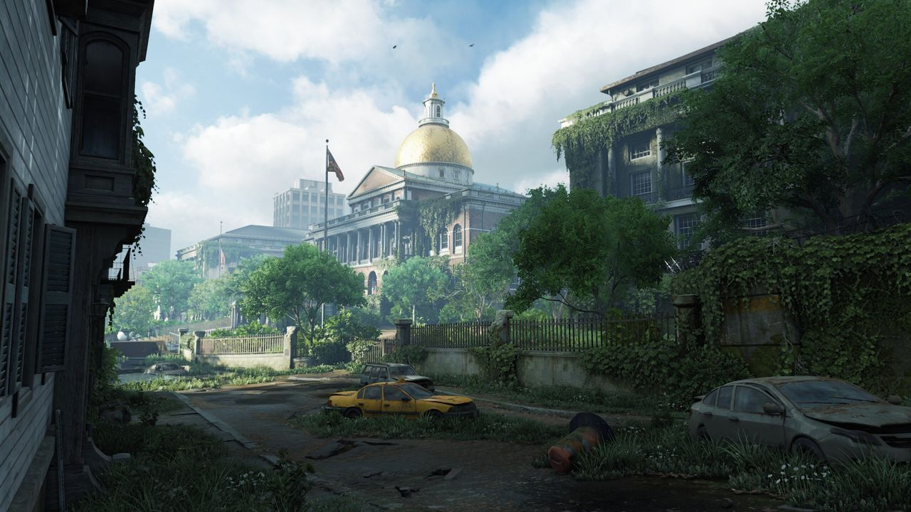
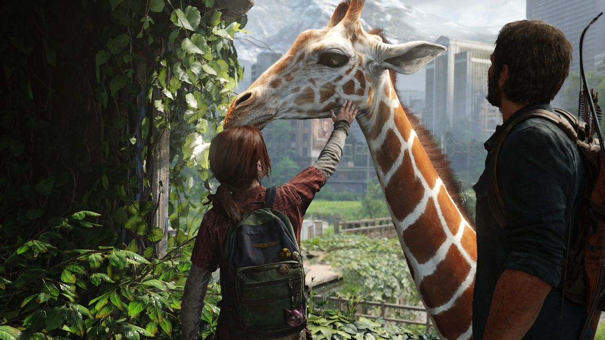
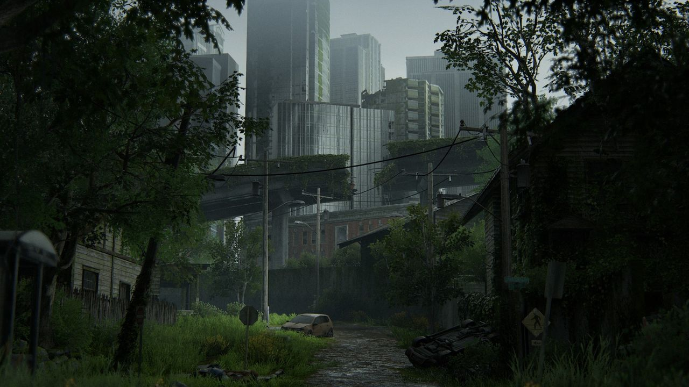
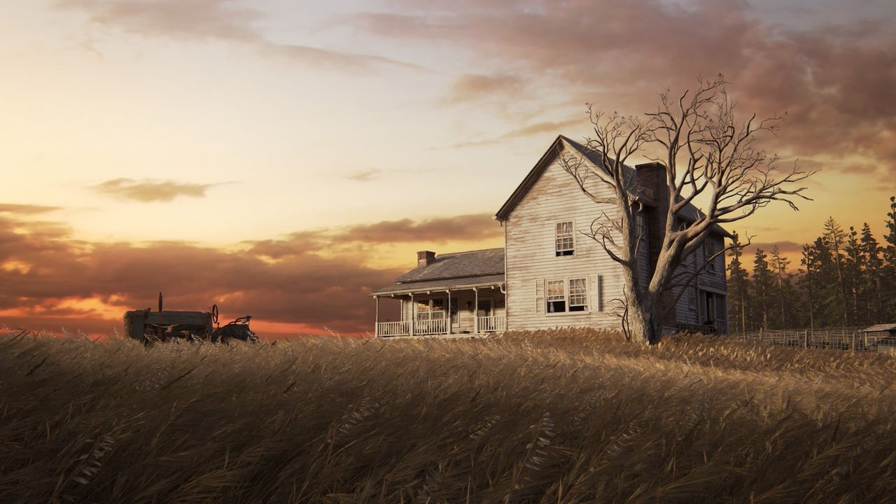
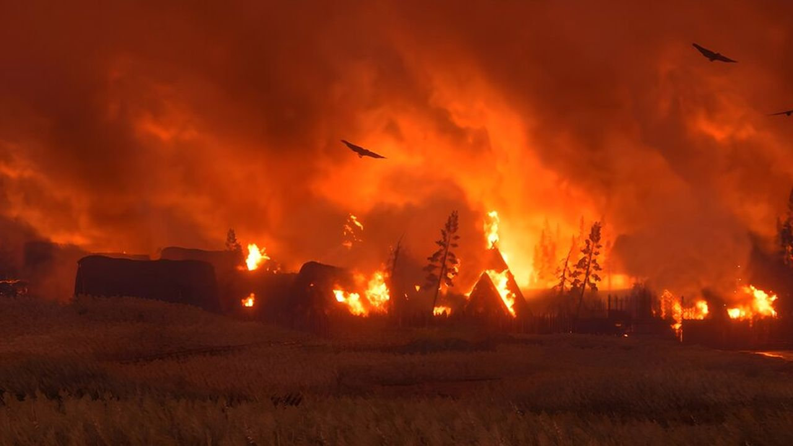
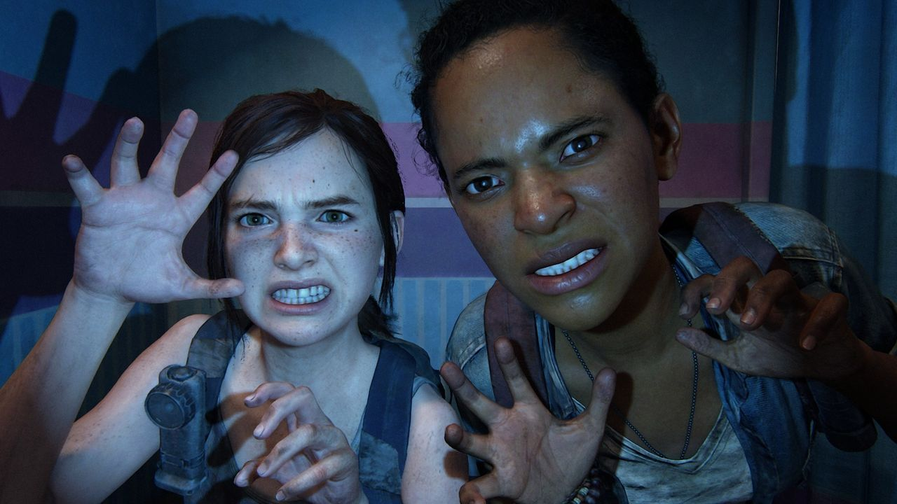

Общее впечатление

The Last of Us — серия, в которой история всегда важнее механик. Мир после пандемии, заросшие города и двое героев, которым приходится выживать вместе: на этом строятся обе части. Здесь редко хочется торопиться. Перестрелки и стелс нужны не ради самих себя, а чтобы почувствовать, чем героям приходится платить за каждое решение.
Отдельно стоит музыка Густаво Сантаолальи: несколько гитарных нот превращают любой тихий момент в запоминающийся.
The Last of Us Part I

Первая часть — путь Джоэла и Элли через постапокалиптические США. Это история о том, как недоверие постепенно превращается в привязанность, и именно на этой связи держится вся игра. Оценка 10/10 — за героев, за диалоги в дороге и за финал, о котором хочется спорить.
Моё мнение о финале спрятано под спойлером. Нажмите на текст, чтобы прочитать.
The Last of Us Part II
Любимая игра в моём списке

Вторая часть переносит героев из Джексона в Сиэтл спустя годы, и игра задаёт неудобные вопросы о мести, потере и о том, сколько вообще можно оправдать. История смотрит на конфликт с двух сторон, и от этого каждый эпизод ощущается тяжелее и честнее.


Мне нравится, что игра не пытается понравиться любой ценой: она рискует, и этот риск запомнился больше всего. Оценка 10/10.
Ниже спойлеры к сюжету Part II. Нажмите на текст, чтобы прочитать.
Эта игра поделила мою жизнь на «до» и «после».
Left Behind

Left Behind — дополнение к первой части об Элли и её подруге Райли. Это короткая и очень личная история: торговый центр, игры вдвоём и один вечер, который многое объясняет в характере героини. Боёв здесь меньше, чем в основной игре, зато больше тихих сцен.
Итог
Я безумно люблю эту игру. С тех пор как я о ней узнала, прошло уже много лет, а она всё так же мне дорога. По-моему, она по праву заслужила все свои многочисленные награды: качество, геймплей, сюжет, герои, озвучка, музыка — здесь всё на высшем уровне. Как такую игру можно не полюбить?
Трейлеры
Part I
Part II
Музыка
Где купить
- Part IОткрыть в Steam
- Part IIОткрыть в Steam